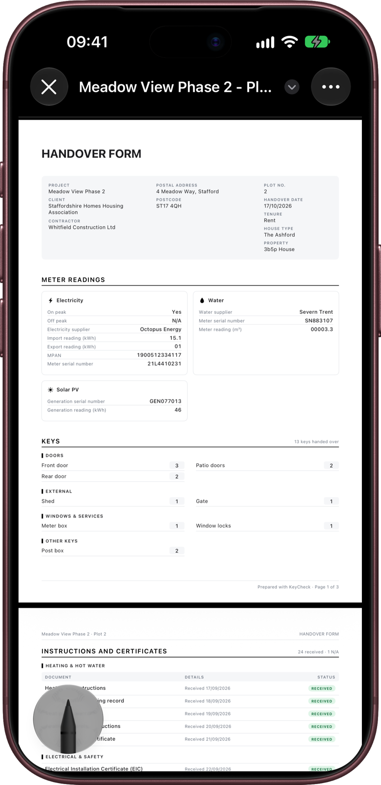
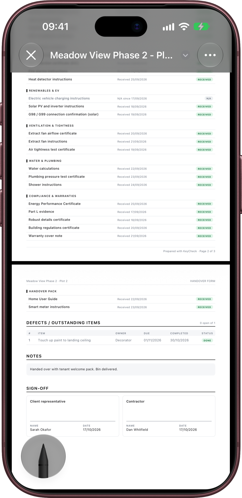

Each plot's handover form becomes a PDF: a record of what was handed over, the meter readings, the paperwork and the signatures, for the client's and the residents' files. This chapter explains how to make it and what each part means, for anyone who receives one.
Making a handover PDF
One plot
Open the plot and tap the share button at the top right (Export this handover). KeyCheck prepares the PDF, then opens the share sheet, where you can email it, save it to Files or OneDrive, AirDrop it or print it.
Several plots
On the Plots tab, tap the menu beside the number of plots, choose Select plots, select the ones you want, and tap Export at the bottom of the screen. Each plot gets its own form.
The whole site
On the Site tab, find Handover forms and tap Export all…. This makes one PDF, often called the handover pack, with:
- the project documents, followed by the planning conditions and S106 / CIL obligations, if there are any
- a handover form for every plot that has something recorded (plots with nothing recorded yet are left out)
- the communal keys, at the end
On the Mac
Select one or more plots in the table and choose Plot → Export Handover PDF… (⌘E), or right-click them. To print one plot's form, select it and choose File → Print Handover Form… (⌘P).
File names
The file is named using the File name in the project's branding profile (chapter 2), which starts as {project} - {unit} Handover. KeyCheck fills in the project name, the plot (or "All plots"), and the date as year-month-day. For example: Meadow View Phase 2 - Plot 7 Handover.pdf.
What's on the form
Handover forms are A4 portrait. Here's what each part means, from top to bottom.
The header
The coloured bar, title (HANDOVER FORM unless the branding changes it), logo or company name come from the project's branding profile. With no branding, the form is plain black and white.
Below it is a shaded panel with the project, client and contractor; the plot's postal address and postcode (or the site's, if the plot has none); the plot number, tenure and Handover date; and, if they're recorded, the house type, property and block and floor. Prepared by is the name in Settings → You of the person who made the PDF. A dash (—) means nothing was recorded.
The target handover date is never printed. The form only ever shows the real handover date.

Meter readings
A card for each meter: the supplier, readings, serial number and reference numbers (MPAN or MPRN), with any meter photos and the date they were taken. A meter marked as not fitted shows NOT FITTED with the reason, or "No meter at handover".
Keys
How many of each key, fob or card was handed over, grouped as on the form. If the project uses key suites (chapter 4), the Master key suite comes first, and keys show which suite they belong to, for example "Master · Set A". The heading says how many keys were handed over in total.
Instructions and certificates
The plot's documents, under their group headings, each with a status:
| Status on the PDF | What it means |
|---|---|
| RECEIVED | The document has been received. The date it was received is shown. |
| OUTSTANDING | It's been asked for and hasn't arrived. Shows when it was marked outstanding and last chased. |
| NOT RECEIVED | Nobody has recorded it either way. |
| N/A | It doesn't apply to this plot. The row is greyed out. |
| PREVIOUS AGENT | Only on plots handed over by a previous agent: dealt with before the site was taken on (chapter 4). |
Any note on a document is printed beside it. The heading has a summary, such as "18 received · 2 outstanding · 3 N/A".
Documents switched off in Form items, and documents hidden for this plot's tenure (chapter 3), aren't printed at all.

Defects / outstanding items
The final snags still open at handover, with who's fixing them, the due date and the completed date. Each is marked OPEN or DONE, and the heading says how many are still open, for example "2 open of 3". This section only appears if the project uses outstanding items and the plot has some.
Notes
The plot's notes, if there are any.
Sign-off
A box for each sign-off role, such as the client representative and contractor, with the signature, name and date. For a plot handed over by a previous agent, there's a single box instead, saying Handed over by a previous agent and No signatures were taken in KeyCheck, with the handover date.
The footer
Every page has the company name and footer text on the left, and the page number on the right, for example "Page 1 of 2". Prepared with KeyCheck appears beside it unless you've turned it off in Settings → Branding.
Sections with nothing in them are left out, so a form is only as long as it needs to be.
The communal keys and project documents PDFs
These are also in the handover pack, and can be made on their own:
- Communal keys (chapter 7): tap Export communal keys (PDF) at the bottom of the Communal keys screen. It lists each key, its block or entrance, quantity, who it was handed to, the date and any note.
- Project documents (chapter 6): on the Documents tab, tap ⋯ → Export PDF. It lists every project document with its status, dates and notes, with bundles and their items. If the project has planning conditions, it adds a Planning conditions section (outstanding, discharged and compliance-only conditions) and an S106 / CIL obligations section. Planning conditions come with a note that they're a record of the documents imported into KeyCheck, not a legal certificate of compliance.
If you've received a handover form, the most important parts are usually the meter readings (take a photo of your own meters on the day you move in, to check them), the keys you should have, and any items still OPEN under Defects / outstanding items, with who's fixing them. Documents marked OUTSTANDING or NOT RECEIVED are still to come.